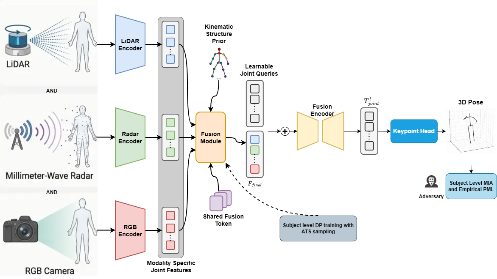

Kinematics-Induced Multimodal 3D Human Pose Estimation with Subject-Level Privacy
Abstract
Multimodal 3D Human Pose Estimation (3D HPE) combines complementary information from RGB, LiDAR, and mmWave radar, but models trained on correlated observations from the same individuals raise privacy risks overlooked by record-level analysis. We present a unified framework for multimodal 3D HPE that couples kinematics-induced sensor fusion with subject-level privacy auditing and private training. First, our multimodal model aligns modality-specific joint representations, injects skeletal structure and adaptively aggregates complementary sensor evidence for accurate pose prediction. Second, we formulate a black-box subject membership inference attack for 3D HPE, complemented by an empirical pointwise maximal leakage analysis, which characterizes how individual attack score outcomes change inference about the membership outcome. Third, we instantiate user-level differential privacy via Action Temporal Stratification, a population-weighted within-subject sampling strategy that enforces action and temporal coverage. We evaluate our framework on the MM-Fi dataset across three diverse experimental protocols. Source code will be released upon acceptance.

Architecture.
Results & Analysis
MM-Fi. MPJPE and PA-MPJPE in millimeters (lower is better). Results from the submitted manuscript.
Protocol 3: All Activities
| Model | Random | Cross-Environment | Cross-Subject | |||
|---|---|---|---|---|---|---|
| MPJPE ↓ | PA-MPJPE ↓ | MPJPE ↓ | PA-MPJPE ↓ | MPJPE ↓ | PA-MPJPE ↓ | |
| LiDAR (PointTransformerV2) | 46.24 | 36.13 | 60.70 | 40.12 | 55.28 | 38.21 |
| Radar (PointTransformerV2) | 61.09 | 45.27 | 78.42 | 58.58 | 61.80 | 47.11 |
| RGB (DSTFormer) | 44.34 | 32.84 | 63.30 | 48.03 | 48.70 | 36.87 |
| Fusion (RGB + LiDAR + Radar) | 38.88 | 29.45 | 49.89 | 40.03 | 37.65 | 26.04 |
Protocol 1: Daily Activities
| Model | Random | Cross-Environment | Cross-Subject | |||
|---|---|---|---|---|---|---|
| MPJPE ↓ | PA-MPJPE ↓ | MPJPE ↓ | PA-MPJPE ↓ | MPJPE ↓ | PA-MPJPE ↓ | |
| LiDAR (PointTransformerV2) | 47.60 | 38.73 | 66.68 | 47.68 | 52.47 | 39.02 |
| Radar (PointTransformerV2) | 61.65 | 49.42 | 83.27 | 60.55 | 62.14 | 46.12 |
| RGB (DSTFormer) | 54.10 | 41.84 | 63.38 | 47.04 | 56.06 | 43.59 |
| Fusion (RGB + LiDAR + Radar) | 40.60 | 32.91 | 55.62 | 42.53 | 45.38 | 34.98 |
Protocol 2: Rehabilitation Activities
| Model | Random | Cross-Environment | Cross-Subject | |||
|---|---|---|---|---|---|---|
| MPJPE ↓ | PA-MPJPE ↓ | MPJPE ↓ | PA-MPJPE ↓ | MPJPE ↓ | PA-MPJPE ↓ | |
| LiDAR (PointTransformerV2) | 42.76 | 32.97 | 61.01 | 46.43 | 41.79 | 32.43 |
| Radar (PointTransformerV2) | 59.76 | 44.93 | 81.04 | 63.07 | 58.66 | 43.94 |
| RGB (DSTFormer) | 41.59 | 32.70 | 54.93 | 41.38 | 42.51 | 33.02 |
| Fusion (RGB + LiDAR + Radar) | 38.64 | 30.67 | 53.00 | 39.64 | 41.39 | 29.97 |
Subject-Level Privacy–Utility Trade-off
MM-Fi Protocol 3, cross-subject split. Lower MPJPE and empirical PML are better. Membership ROC-AUC near 0.5 suggests weaker attack discrimination.
| Privacy budget ε | MPJPE (mm) ↓ | ROC-AUC | Empirical PML (nats) ↓ |
|---|---|---|---|
| 1 | 1081.32 | 0.48 | 0.00 |
| 16 | 314.85 | 0.59 | 0.14 |
| 64 | 278.58 | 0.64 | 0.14 |
| 100 | 269.86 | 0.65 | 0.29 |
| 200 | 247.72 | 0.73 | 0.29 |
| ∞ (non-private) | 37.65 | 0.83 | 0.44 |
BibTeX
@misc{sivangi2026kinematics,
title={Kinematics-Induced Multimodal 3D Human Pose Estimation with Subject-Level Privacy},
author={Sivangi, Kaushik Bhargav and Deligianni, Fani},
year={2026},
eprint={2610.02943},
archivePrefix={arXiv},
primaryClass={cs.CV},
note={Under review at ICLR 2027}
}